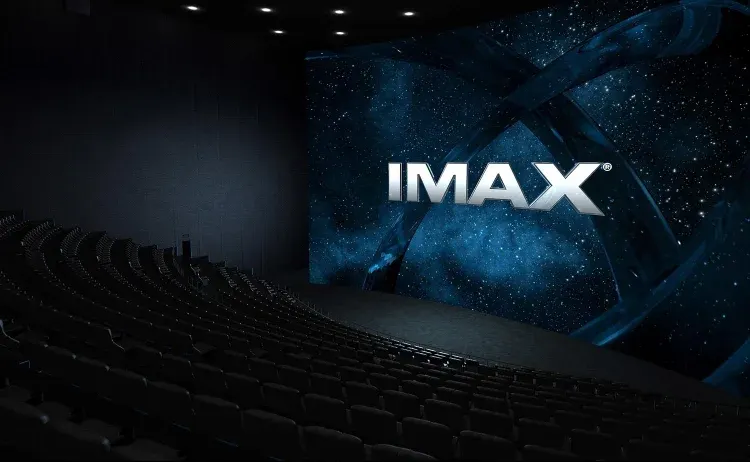

What are IMAX and 4DX?
IMAX theatres are designed for ultra-large format films with powerful audio and visuals.
4DX theatres add real-world effects like seat motion, wind, water sprays, and scents to immerse you in the movie.
📊 IMAX vs 4DX Comparison
| Feature | IMAX | 4DX |
|---|---|---|
| Screen Size | Large, curved ultra-high definition screen | Standard screen size with motion effects |
| Audio | Precision surround sound system | Standard audio plus physical effects |
| Comfort | Relaxed seating for longer movies | Moving seats with environmental effects |
| Experience | Visual and sound immersion | Multi-sensory with motion and environment |
| Best For | Cinematic storytelling and epic visuals | Action-packed, thrilling films |
🎥 Visual Comparison
|  | |
| IMAX Theatre | 4DX Theatre |
✅ Benefits of Each Format
IMAX
- Massive curved screens enhance immersion.
- Superior sound and image clarity.
- Best suited for cinematic masterpieces.
4DX
- Motion seats bring action to life.
- Environmental effects like wind, rain, and scent.
- Perfect for thrillers and high-energy films.
🔚 Conclusion
IMAX is ideal for those who want stunning visuals and sound.
4DX is perfect for viewers seeking excitement and movement.
Depending on your mood or the movie genre, either can offer a fantastic experience. Why not try both?